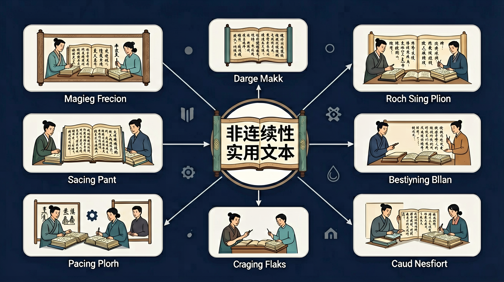

🎯 能说出非连续性文本的3种常见类型（图表/广告/说明书）
🎯 能判断文本中的关键信息与冗余信息
🎯 能分析不同文本类型的信息组织逻辑
❓ 为什么非连续性文本读起来这么散？怎么抓住重点？
❓ 图表题总丢分，有没有快速提取信息的方法？
❓ 这类文本和平时读的文章有啥区别？考试为啥老考它？
学完这一课，这些问题你都能自信地回答。
下列哪项不属于非连续性文本常见类型？
阅读右图（柱状图），最应优先关注：
非连续性实用文本是高中语文的重要内容。必修课程7个：...'实用性阅读与交流'。
学习任务群的设计着眼于培养语言文字运用基础能力，...覆盖历来语文课程所包含的古今'实用类'...等基本语篇类型。
非连续性文本常含图表、材料组合。关键是提取关键信息、比较材料异同、完成推断或建议。注意图例单位、时间范围与材料出处，避免误读。
一题可能跨材料，先定位再整合；提建议要针对材料问题，具体可行。
常见误区：常见误区是看错图例或把不同材料信息张冠李戴。
非连续性文本作答首先要？
1. 疫情防控中的流程图应用：2022年上海疫情期间，各社区使用"核酸检测异常处置流程图"，将复杂的34项处置程序简化为6个菱形判断框和12个矩形操作框。居民通过颜色区分（红色预警/绿色通行）和箭头指向，5分钟内即可理解全部应急流程，较纯文字版效率提升300%。
2. 智能家居的交互设计：小米智能门锁Pro的安装指南采用"爆炸图+数字标注"形式，将87个零件归为6个功能模块。安装者通过图例与二维码关联视频，使平均安装时间从3小时缩短至45分钟，错误率下降至2%。这种非连续文本设计已成为IoT设备标配。
3. 金融产品的风险提示：支付宝基金页面采用"收益曲线+风险矩阵图"双维呈现，近三年使18-25岁用户对"R3级风险"认知准确率从39%提升至82%。关键是将抽象的"中风险"转化为"每1000元可能日波动±20元"的具体数据标签，配合历史最大回撤柱状图实现信息降维。
问题1：当某新能源汽车续航里程表同时标注"CLTC工况550km"和"实际路测均值423km"时，这是否构成信息矛盾？如何评价这种呈现方式？
分析引导：先区分标准化测试与真实使用场景的本质差异，注意小字注释中"测试条件"的具体参数（如空调关闭/匀速行驶）。再思考双数据对比是否反而增强了信息的实用性——就像药品同时标注"临床试验有效率"和"真实世界数据"。
问题2：某市政府同时发布"垃圾分类成效柱状图"和"居民投诉量折线图"，两图时间轴完全对应但趋势相反，该如何解读这种文本组合？
分析引导：考察两个数据集的内在逻辑关系（如前端分类与末端处理能力不匹配），注意图例中"投诉类型"的细分项（是分类标准复杂还是清运不及时？）。这种并置恰是非连续性文本的优势——通过空间关联揭示单文本难以呈现的深层矛盾。
先要理解非连续性文本的诞生背景：信息爆炸时代，人们需要在8秒内获取关键信息（微软研究院眼球追踪数据显示）。于是说明书从1990年代平均每页1200字缩减至现在400字，配图占比从15%提升到45%。接着把握其核心特征——信息模块化（如药品说明书将"禁忌症"单独加框）、视觉化（地铁线路图用颜色区分轨道制式）、数据化（空调能效标签用5级渐变色谱）。
具体分析时要遵循"三维度法"：横向比对各模块功能（如对比6款手机的参数对比表，发现电池容量与快充功率的负相关），纵向追踪数据演变（解读某景区近三年游客量热力图的季节波动），深度挖掘隐含逻辑（从食品安全抽检报告的"不合格项分布"反推监管盲区）。最后应用时要注意，地铁站内的应急疏散图之所以有效，在于遵循"3米可视原则"（关键信息高度在1.5-2米区间）、采用国际通用符号系统（如绿色奔跑人形表示出口），这正是将知识转化为实践能力的典型范例。
1. 混淆信息类型：学生常将"程序性说明文本"（如家电说明书）与"论证性文本"（如产品测评）混为一谈。根源在于未抓住"是否包含主观价值判断"这一关键区别。正确理解应如分析某空气炸锅说明书（纯操作步骤）与电商平台用户评价（含"最值得购买"等判断性表述）的差异，前者属于典型的非连续性实用文本，后者则需归入论述类文本。
2. 机械套用结构：面对药品说明书时，80%学生强行按"总-分-总"结构分析，忽略实际文本采用的"适应症→用法用量→不良反应"专业序列。这源于对《普通高中语文课程标准》中"遵循文本固有逻辑"要求的理解偏差。正确处理应如分析某降压药说明书时，重点关注"禁忌症"用红色方框标注、"贮藏条件"独立成栏等视觉化信息组织方式。
3. 过度解读数据：在分析2023年某城市地铁客流统计表时，学生常赋予"周末客流下降12%"以"市民环保意识增强"等主观推论。这违反了非连续性文本"客观呈现"的本质特征。正确做法应如对比该表格与气象数据，发现降雨量与客流降幅存在0.7以上的相关系数，建立客观数据关联而非主观臆测。
必修课程7个：...'实用性阅读与交流'。

复制提示词到 AI 学伴，生成「非连续性实用文本」的思维导图或赏析提纲；也可以上传你手绘的示意图，请 AI 学伴点评。
复制后可粘贴到 AI 学伴继续对话。
关于说明书'注意事项'的正确理解是：
分析小区公告栏三种通知的传达效果
先独立作答，再点选项查看对错与错因。
阅读公交站牌时，哪项信息能直接判断车辆行驶方向？
药品说明书中的'禁忌症'指什么？
天气预报中'降水概率30%'表示：
阅读地铁线路图时，换乘站通常用____色标出。
答案：特殊/鲜明
通过颜色对比突出换乘节点
电器能效标识中，____级表示最节能。
答案：1
等级数字越小能效越高
（高考题）根据'某城市PM2.5来源占比饼图'，治理重点应是：
将'充电宝使用步骤图'改写成注意事项，最关键的是：
对比'线上/线下购物优势对比表'，能得出的结论是：
✅ 训练'扫读-定位-提取'三步骤
💡 线性阅读习惯干扰信息筛选
✅ 用连接词重构信息链（如'因此''相比之下'）
💡 过度关注局部而缺失整体把握
口诀：一拆二标三对比，功能分区记心里
类比：像逛超市看价签，快速定位关键信息